Thuật ngữ trong Ultimate
Contents
Thuật ngữ trong Ultimate#
Phần 1: Chung#
{kind=link}
Backhand grip: cách nắm đĩa frisbee khi ném trái tay. Các ngón tay cuộn vào phía dưới vành đĩa, còn ngón tay cái đặt lên phía trên đĩa.
Downfield: phần sân hướng về phía endzone của đội tấn công theo hướng của người cầm đĩa.
Field sense: khả năng nhận thức được vị trí của bản thân trên sân so với vị trí của những người chơi còn lại cũng như đường biên của sân.
{kind=link}
Forehand grip: cách nắm đĩa frisbee khi ném thuận tay. Ngón trỏ vả ngón giữa duỗi thẳng ra và đặt phía dưới đĩa. Ngón áp út và ngón út đặt và đỡ phía ngoài của đĩa. Ngón tay cái đặt lên phía trên đĩa.
Frisbee: đĩa nhựa mềm có vành, được thiết kế theo khí động học để có thể bay và xoáy, và có thể bắt bằng tay.
Grip: cách nắm đĩa frisbee.
Pivot: kỹ thuật giữ chân trụ của người ném. Người ném có thể xoay người quanh phần đế hoặc ngón chân để nghiêng người hoặc đổi hướng tạo điều kiện để ném.
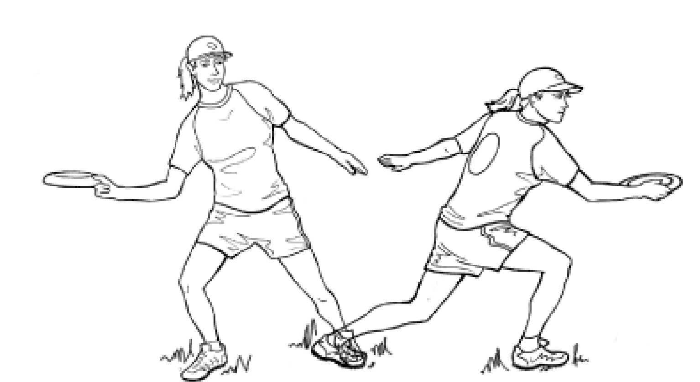
Upfield: phần sân đối diện với phía endzone của đội tấn công theo hướng của người cầm đĩa.
Spirit of The Game: tinh thần thể thao công bằng, nhưng được làm rõ ràng hơn trong Ultimate.
Phần 2: Ném#
Backhand: mặt dưới của bàn tay hướng về phía ném. Đây là cách ném phổ biến và một trong những cách ném hiệu quả nhất. Hành động ném tương tự một cú vợt tennis trái tay.
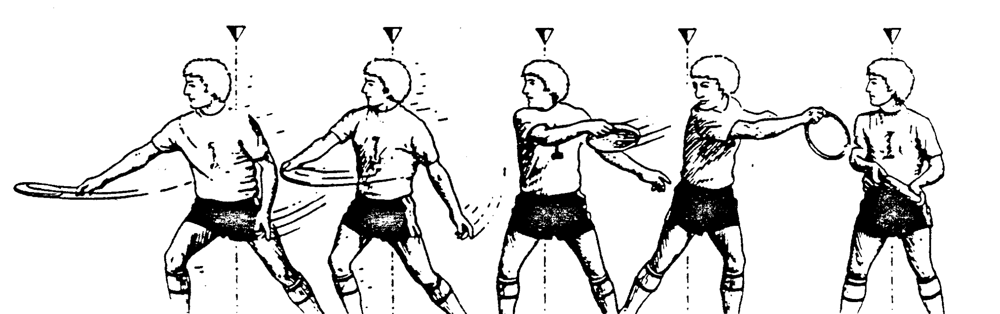
Break the mark: cú ném về phía mà người phòng thủ đang cố giữ không cho người ném chuyền đĩa về (hướng bị marked).
Dump: cú ném ngắn về phía sau cho đồng đội.
Fake: động tác giả vờ ném đĩa về một bên để lừa người phòng thủ và ném sang hướng khác, được thực hiện bởi người ném.
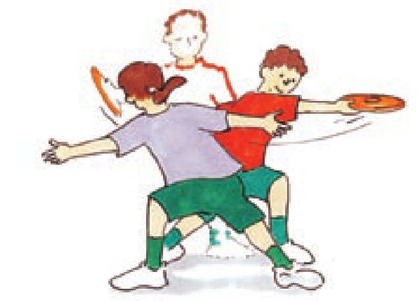
Forehand: đĩa được ném từ cùng bên với tay ném. Hành động ném tương tự một cú vợt tennis thuận tay.
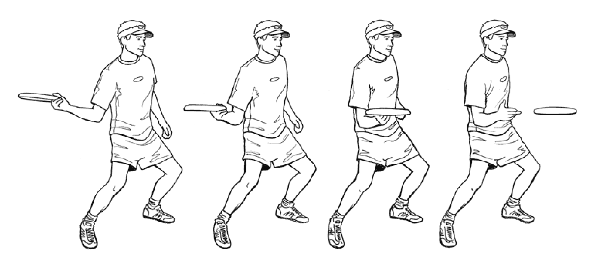
Handler: người chơi thường xuyên ném đĩa hơn những người còn lại trong đội.
Hammer: đĩa frisbee bay khi đang lật ngửa. Đĩa được cầm theo kiểu cầm thuận tay và được giao từ trên đầu người ném, tương tự một cú giao bóng trong tennis.
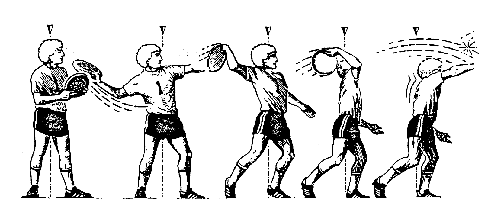
Huck: cú ném sâu về phía endzone của đối thủ.
Leading Pass: cú ném về phía trước mặt đồng đội đang chạy, chú ý tốc độ và hướng chạy của người đó.
Pull: mỗi điểm được bắt đầu bởi đội phòng thủ ném đĩa cho đội tấn công, tất cả người chơi phải đứng sau vạch endzone trước khi một cú pull được thực hiện.
Reset Throw: cú ném ngắn sang hai bên hoặc về phía sau với mục đích đưa đĩa tới vị trí thuận lợi hơn để tấn công hoặc đặt lại stall count về 0.
Swing: cú ném ngắn sang hai bên cho đồng đội.
Skip: sau khi ném, đĩa frisbee chạm đất, bật khỏi mặt đất và tiếp tục bay. Cú ném này có thể thực hiện với cả cách cầm thuận tay và trái tay. Viền ngoài của đĩa nên chạm đất trước viền trong của đĩa. Đây không phải là cú ném hợp lệ trong Ultimate Frisbee.
Phần 3: Tấn công#
Cutter: người chơi chạy chỗ hoặc cut thường xuyên để tìm chỗ trống và nhận đĩa.
Cut: động tác di chuyển để thoát khỏi người phòng thủ bằng ít nhất một lần đổi hướng di chuyển đột ngột.
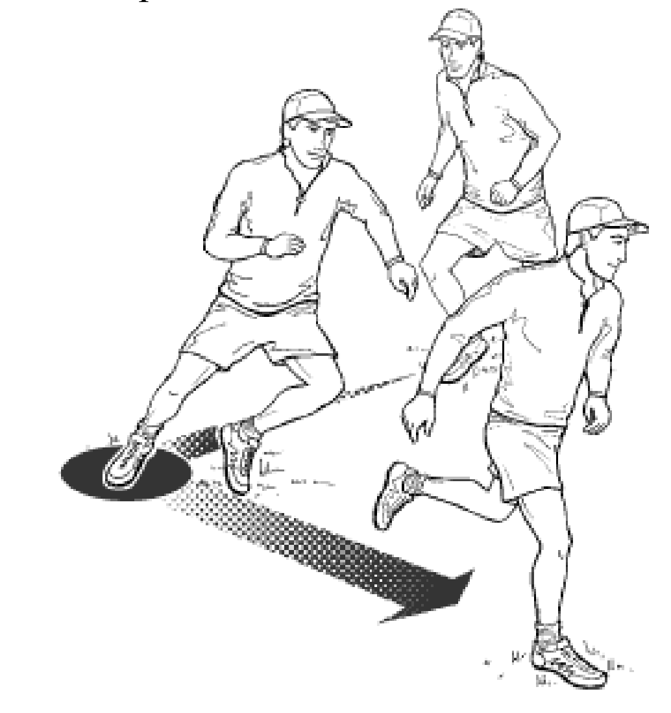
Clear: cú chạy cắt với mục tiêu tạo chỗ trống cho đồng đội, không phải là cú chạy cắt để nhận đĩa. Cú chạy được thực hiện bởi người tấn công sau khi thực hiện một cú cắt nhận đĩa nhưng không nhận được đĩa, hoặc bởi người ném sau khi chuyền đĩa cho đồng đội trong cự ly ngắn.
Callahan goal: điểm được ghi bởi một người chơi phòng thủ khi người chơi đó bắt được đĩa bên trong endzone đối thủ khi đối thủ đang chuyền đĩa cho nhau.
Dodging: động tác di chuyển một vài bước khỏi vị trí nhận đĩa, sau đó nảy mạnh bằng chân ở phía ngoài để đẩy người về phía cần thiết để tránh đối thủ hoặc nhận đĩa.
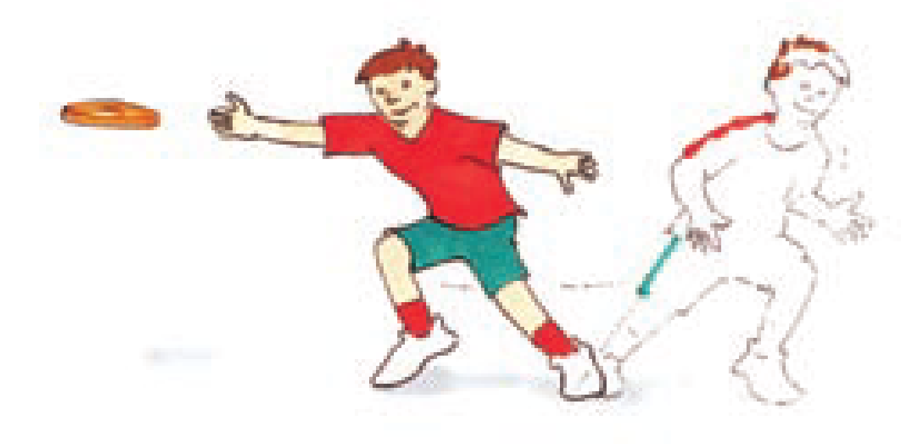
Lead: hành động chạy nhanh tới đĩa, có thể chạy thẳng tới hoặc vuông góc vào chỗ trống (khỏi người phòng thủ).
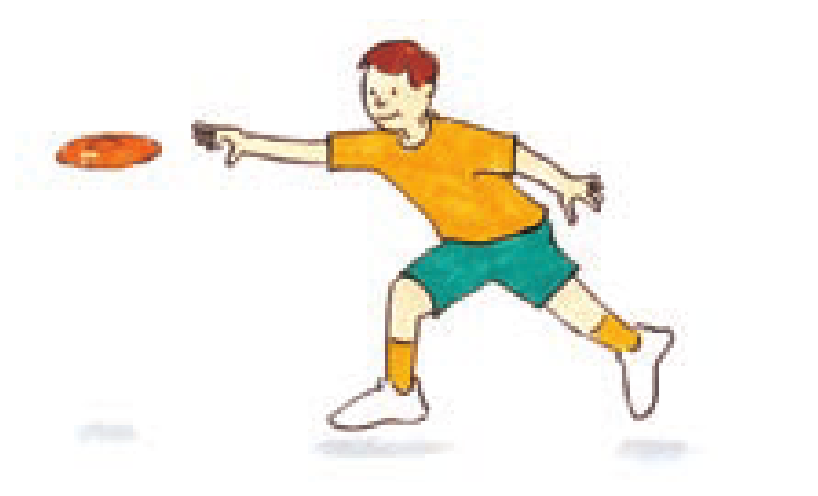
Receiver: bất kỳ người chơi tấn công nào đang trong vị trí nhận đĩa từ người ném.
Reset: hành động chạy được thực hiện khi một người chơi tấn công chạy về phía bên hoặc về hướng tấn công của người đang giữ đĩa với mục đích nhận đĩa ở vị trí thuận lợi hơn để tấn công.
Strike: cú cut thường được thực hiện bởi một handler chạy trên một đường thẳng ngay trước người ném.
Phần 4: Phòng thủ#
Defend: hành động kèm một người đang cầm hoặc đang không cầm đĩa. Kỹ thuật kèm một-một bao gồm kèm ở phía trước, ở bên, hoặc từ phía sau.
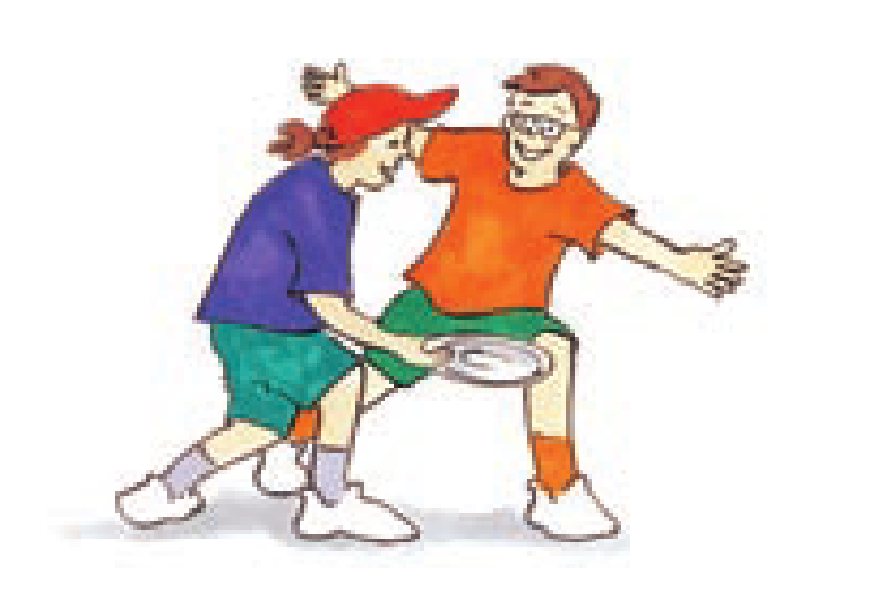
Defender: bất cứ người chơi nào ở đội đang chơi phòng thủ và đang không kèm người cầm đĩa của đội đối phương.
Force: phần sân mà Marker ép người ném phải ném đĩa về. Marker ép bằng cách đứng hẳn về hướng phần sân còn lại.
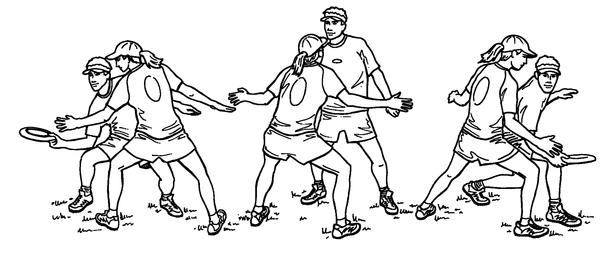
Marker: người chơi phòng thủ và đang kèm người ném đĩa. Marker phải đứng cách người ném ít nhất 30cm (đường kính của đĩa) và không được giẫm lên chân trụ của người ném.
Phần 5: Bắt đĩa#
One-hand: đĩa được bắt bằng một tay. Nếu đĩa bay cao hơn vai người thì các ngón tay của người bắt sẽ nằm phía trên đĩa, còn ngón cái nằm dưới đĩa. Trong trường hợp ngược lại, các ngón tay sẽ nằm ở phía dưới đĩa, còn ngón cái nằm trên đĩa.
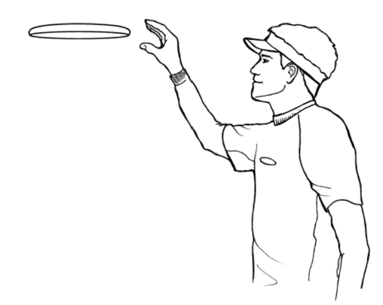
Pancake: đĩa được bắt bằng một tay ở dưới và một tay ở trên. Đây là kỹ thuật bắt dễ thực hiện nhất.
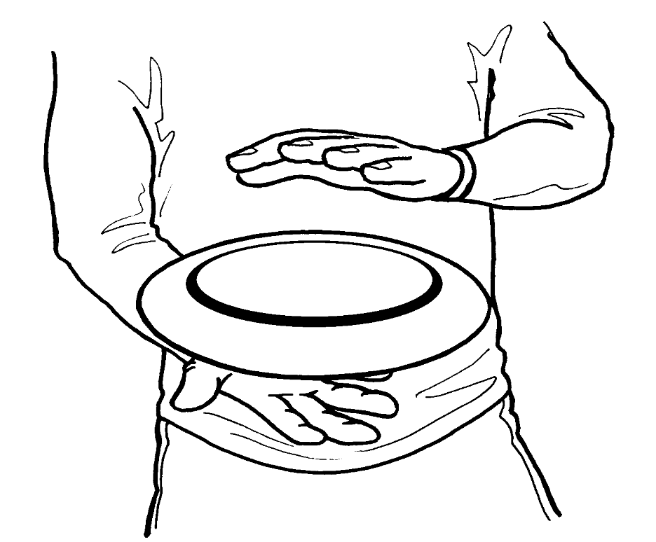
Two-hand: đĩa được bắt bằng hai tay ở hai bên. Nếu đĩa bay cao hơn vai người, các ngón tay của người bắt sẽ nằm phía trên đĩa, còn ngón cái nằm dưới đĩa. Trong trường hợp ngược lại, các ngón tay sẽ nằm ở phía dưới đĩa, còn ngón cái nằm trên đĩa.
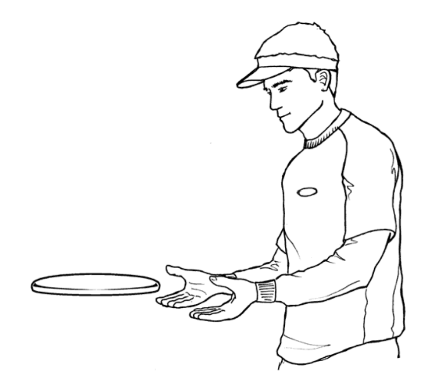
Phần 6: Lỗi#
Foul: lỗi xảy ra khi người chơi phòng thủ va chạm với người tấn công và ngăn chặn khả năng ném hoặc nhận đĩa.
Offside: lỗi việt vị bởi bất kỳ người chơi nào bước qua vạch endzone trước cú ném pull.
Pick: lỗi xảy ra khi người chơi phòng thủ không thể kèm đối thủ của mình vì bị đối phương chặn, khiến họ phải dừng, chậm lại, hoặc đổi hướng để trái va chạm, đồng thời để cho đối phương mà người chơi đó đang kèm có cơ hội mở để nhận đĩa. Đây là một lỗi nguy hiểm trong frisbee vì tốc độ chạy của người chơi thường rất cao.
Stall: lỗi xảy ra khi Marker đếm tới 10 (giây) trước khi người ném chuyền được đĩa.
Stall Count: khoảng thời gian mà người ném có để chuyền đĩa. Stall count phải được hô to bởi Maker, bắt đầu bằng “stalling one, two, three,…”, mỗi lần hô cách nhau 1 giây, và không được hô nhanh hơn khi sắp hết 10 giây.
Strip: lỗi xảy ra khi đĩa bị đánh bật khỏi tay người ném. Đĩa phải được trả lại tay người ném và trò chơi tiếp tục sau 1 cú check.
Travel: lỗi giành lợi thế xảy ra khi người ném tiếp tục di chuyển/đổi hướng chạy sau khi nhận đĩa hoặc trước khi ném, hoặc nhấc và di chuyển chân trụ trong khi ném. Đĩa phải được trả về cho người ném để chơi lại, trừ trường hợp xảy ra turnover.